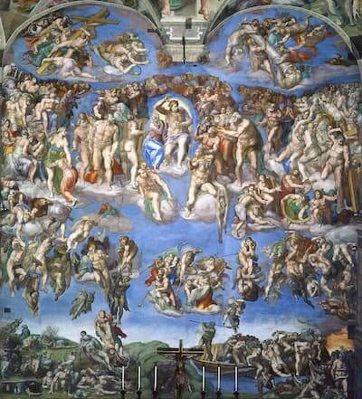

Bibliografia
Michelangelo Buonarroti (1475–1564): Artista renascentista italiano, considerado um dos maiores gênios da arte ocidental. Destacou-se como escultor, pintor, arquiteto e poeta, com obras-primas que marcaram a história da arte e influenciaram gerações.
Vida: Nascido em Caprese, na Itália, cresceu em Florença, berço do Renascimento. Desde jovem demonstrou talento excepcional. Trabalhou para os principais mecenas da época, incluindo a poderosa Família Médici e vários papas em Roma.
Obra: Sua arte combina força emocional, realismo anatômico e profundidade espiritual. Como escultor, é autor de obras-primas como o David (1504) e a Pietà (1499). Como pintor, criou os afrescos do teto da Capela Sistina (1508–1512) e o Juízo Final (1536–1541), no Vaticano. Também projetou partes da Basílica de São Pedro, em Roma.
Excentricidade e Legado: Michelangelo era reservado, profundamente religioso e obcecado pela perfeição artística. Seu trabalho elevou os padrões técnicos e expressivos da arte, sendo referência até hoje. Seu legado está no domínio absoluto da forma humana e na fusão entre arte, espiritualidade e emoção.
Obras Famosas
-
A Criação de Adão
.jpg)
O quadro A Criação de Adão, pintado por Michelangelo no teto da Capela Sistina, representa o momento bíblico em que Deus dá vida a Adão, o primeiro homem. A cena é famosa pelo gesto do toque entre Deus e Adão, simbolizando a conexão espiritual entre o divino e a humanidade. É uma das obras mais icônicas da arte renascentista.
-
Juízo Final
O Juízo Final de Michelangelo é um afresco pintado entre 1536 e 1541 na Capela Sistina, retratando o julgamento final de Cristo. A obra é marcada por figuras dramáticas e expressivas, simbolizando o destino dos justos e dos condenados. É uma das maiores realizações de Michelangelo e um marco da arte renascentista, gerando controvérsias devido às figuras nuas.
-
A Queda do Homem e a Expulsão do Paraíso (1508 a 1512)

"A Queda do Homem e a Expulsão do Paraíso" é uma cena do teto da Capela Sistina, pintada por Michelangelo entre 1508 e 1512. Ela retrata dois momentos do Gênesis*: a tentação de Eva pela serpente, que leva ao pecado original, e a expulsão de Adão e Eva do Jardim do Éden como castigo pela desobediência. A obra é famosa pela representação idealizada do corpo humano e pela intensidade emocional dos personagens, expressando as consequências do pecado e a separação do homem de Deus. É uma das mais emblemáticas pinturas do Renascimento.
-
David (1501–1504)
.jpg)
Esculpido por Michelangelo para a cidade de Florença, "David" representa o herói bíblico antes de enfrentar Golias. A obra foi feita a partir de um único bloco de mármore e simboliza o poder e a determinação da República Florentina. Foi colocada na Piazza della Signoria e é um dos maiores ícones da arte renascentista.
-
Pietà (1498–1499)
.jpeg)
A "Pietà" foi encomendada para a Basílica de São Pedro, no Vaticano. Ela mostra Maria segurando o corpo de Jesus após a crucificação, com uma expressão de dor serena. Michelangelo a esculpiu ainda jovem, e a obra é admirada pela sua perfeição anatômica e pela delicada emotividade.
-
A Sagrada Família (1504)
Esta obra de Michelangelo retrata Maria, o menino Jesus e São João Batista em um estilo naturalista, focando nas emoções de afeto e harmonia. É uma das primeiras grandes representações de Michelangelo com figuras humanas, mostrando seu domínio do realismo e das proporções.
-
A Última Ceia (Afresco)

Michelangelo não pintou uma versão da **Última Ceia** tão famosa quanto a de Leonardo da Vinci. Embora tenha trabalhado na Capela Sistina, ele não completou uma versão da Última Ceia. Sua obra é mais associada aos afrescos do teto da Capela Sistina, mas ele não se dedicou à cena da Última Ceia como Leonardo fez.